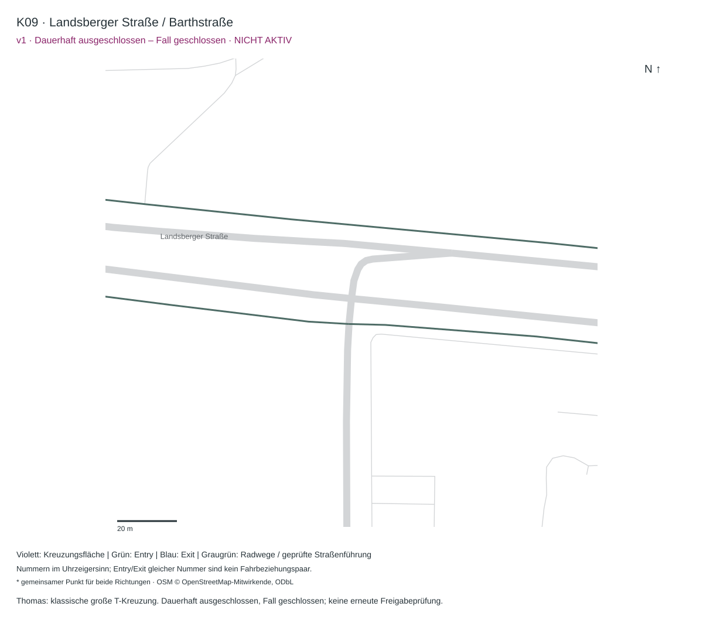

K09 v1 · Landsberger Straße / Barthstraße
Ausgeschlossen · nicht deployedKeine Aktivierung vorgesehen
Thomas: klassische große T-Kreuzung. Dauerhaft ausgeschlossen, Fall geschlossen; keine erneute Freigabeprüfung.

Ausgeschlossen · nicht deployedKeine Aktivierung vorgesehen
Thomas: klassische große T-Kreuzung. Dauerhaft ausgeschlossen, Fall geschlossen; keine erneute Freigabeprüfung.
